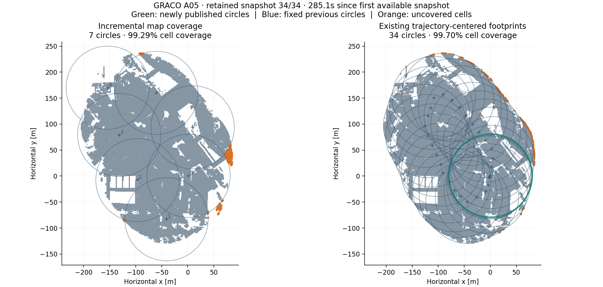

7 fixed footprints replace 34 trajectory-centered footprints. Every completed prefix passes the 95% occupied-cell coverage gate. The final incremental cover reaches 99.29%, and every circle’s greatest disk overlap lies within the requested 20–40% band.
Open all 34 chronological map prefixes →

| Method | Circles | Cell coverage | Point coverage | Memberships / covered cell | Median greatest overlap |
|---|---|---|---|---|---|
| Incremental | 7 | 99.29% | 99.63% | 1.731 | 30.00% |
| Trajectory-centered | 34 | 99.70% | 99.94% | 9.798 | 86.82% |
Equal-weight 1 m occupied cells; fixed first-snapshot gravity plane; radius 80 m. Actual point coverage weights the 887,047 distinct native point representatives. Cell membership counts duplicate inclusion across footprints and are not point counts.
| Method | Metric | N | Min | Q25 | Median | Q75 | Max |
|---|---|---|---|---|---|---|---|
| Incremental | Greatest disk overlap | 7 | 30.00% | 30.00% | 30.00% | 30.00% | 30.00% |
| Incremental | All intersecting-pair disk overlap | 12 | 0.76% | 17.12% | 29.14% | 30.00% | 30.00% |
| Incremental | Shared occupied cells / smaller membership | 12 | 1.01% | 23.37% | 34.62% | 43.71% | 59.65% |
| Trajectory-centered | Greatest disk overlap | 34 | 83.95% | 84.07% | 86.82% | 89.68% | 99.92% |
| Trajectory-centered | All intersecting-pair disk overlap | 477 | 0.00% | 17.52% | 34.97% | 61.31% | 99.92% |
| Trajectory-centered | Shared occupied cells / smaller membership | 477 | 0.01% | 20.91% | 39.77% | 67.26% | 99.96% |
The placement objective targets each new circle’s greatest disk overlap. Smaller overlaps with additional neighbors are expected. Shared occupied-cell overlap is a distinct map-dependent quantity.
| Method | Mean update [ms] | P95 [ms] | Max [ms] | Peak RSS [MiB] | RSS run range [MiB] |
|---|---|---|---|---|---|
| Incremental | 99.9 | 501.1 | 1348.8 | 569.6 | 562.2–579.8 |
| Trajectory-centered | 137.0 | 342.5 | 373.1 | 551.6 | 550.2–552.7 |
Three alternating fresh-process pairs on 148; entries are medians across runs. Per-update stage timing includes grid insertion, placement, and cell/overlap diagnostics; it excludes input I/O and point-coverage audits. Both modes retain the same causal input union and omit full occupancy-history storage, state I/O and plotting. RSS is sampled every 20 ms across the actual simultaneous process tree, not a sum of historical peaks.
The prototype uses slightly more resident memory in these controls. The lower circle count and repeated membership do not establish lower memory or runtime for the native LiDAR, MapClosures, or CBS pipeline; those stages remain unchanged.
| Grid | Circles | Lowest prefix coverage | Final cell coverage | Final point coverage | Mean update [ms] | Max update [s] |
|---|---|---|---|---|---|---|
| 0.5m | 7 | 95.505% | 99.408% | 99.630% | 674.7 | 11.247 |
| 1m | 7 | 95.004% | 99.289% | 99.632% | 98.8 | 1.339 |
| 2m | 9 | 95.229% | 99.981% | 99.999% | 19.5 | 0.083 |
Separate fresh replay processes. Resolution affects occupancy, trigger timing and permanent placement. The 10-second HiGHS solver setting is not a hard whole-update wall-clock deadline; preprocessing, refinement and diagnostics add overhead. The 0.5 m control has an update taking more than 10 seconds, and that result is retained.

........................... [100%]
27 passed in 0.59s
All 34 default-grid prefixes preserve previous centers and IDs exactly. HiGHS proves the added-circle count within the candidate set at all seven triggered updates, with zero solver gaps and no greedy fallbacks. The repeated replay produced identical circle histories.
This replay is the growing union of 34 retained prepared area snapshots, not every original scan. Points are transformed by their original odometry anchors; stable IDs freeze each representative’s first available position. Ground truth and robot poses are not placement inputs. Published circles represent fixed spatial footprints; geometry update/freeze policy and LiDAR/MapClosures/CBS integration are deferred.
The comparison projects all original footprint centers into the same fixed first-snapshot horizontal plane. The historical per-anchor gravity variations are standardized for these coverage metrics.
Unknown future growth and immutable prior centers prevent a claim of global minimum circle count. Coverage has priority over count, and count over the overlap objective. Overlap deviations on other maps remain part of the output.
Branch dev/incremental-circle-submaps, base 1eec4b98c51267398d91d8ad953cdbc472951262. NumPy 1.26.4 / SciPy 1.11.4 on workstation 148, without artificial resource quotas.
Input/source hashes · Every update and solver diagnostic · Immutable placement history · Report numbers · Default configuration · Delivery verification